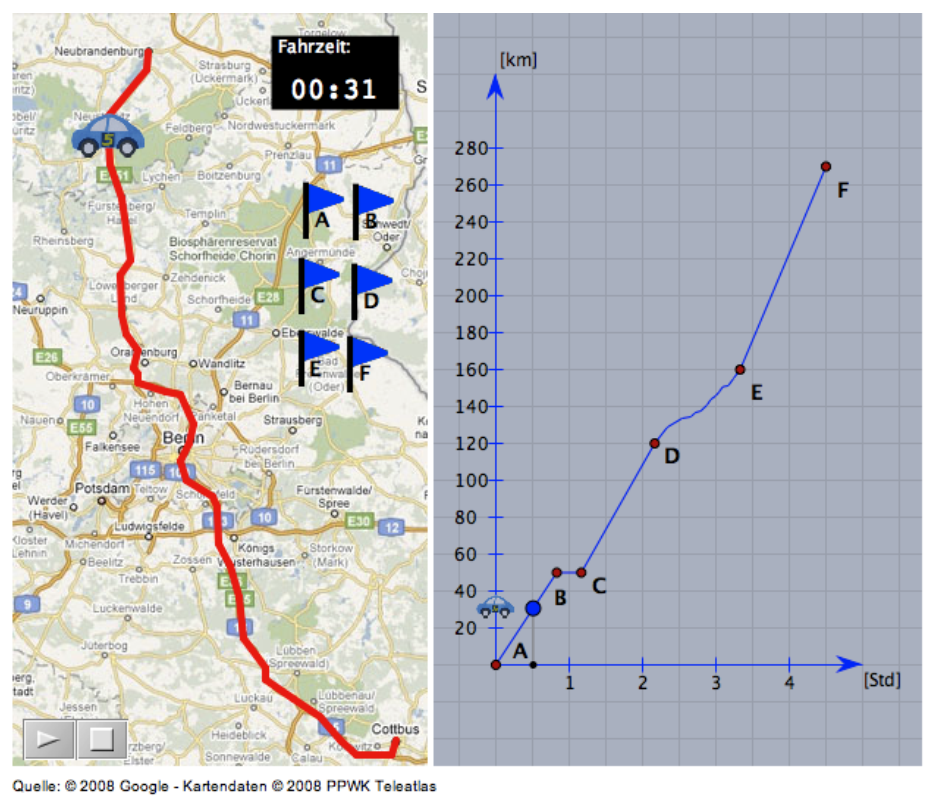

Links sehen Sie den Graphen aus Aufgabe 1 wieder. Er zeigt den zurückgelegten Weg abhängig von der Zeit (Weg-Zeit-Graph). Der Graph rechts zeigt jeweils die Geschwindigkeit zu einem bestimmten Zeitpunkt der Reise (Geschwindigkeits-Zeit-Graph).

a) Wie hoch ist die Geschwindigkeit zwischen C und D? Wie kann man das ablesen?
Diese Aufgabe wird im Unterricht besprochen.
b) Kann man die Geschwindigkeit auch ablesen, wenn man nur den Weg-Zeit-Graphen gegeben hat? Wenn ja, wie macht man das?
Diese Aufgabe wird im Unterricht besprochen.
c) Wann ist die Geschwindigkeit des Autos am grössten? Wie liest man das ab? Kann man das wieder nur im linken Graphen erkennen und wie?
Diese Aufgabe wird im Unterricht besprochen.
d) Kann man mit dem rechten Graphen herausfinden, wie weit man gefahren ist? Wenn ja, wie müsste man vorgehen?